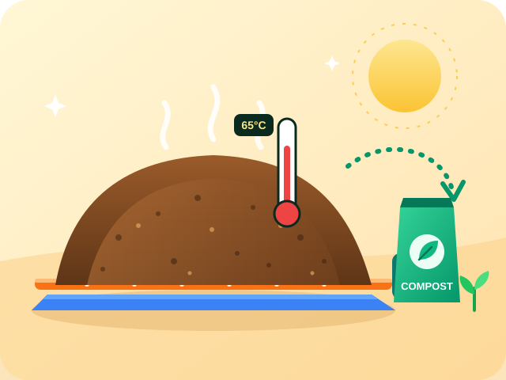
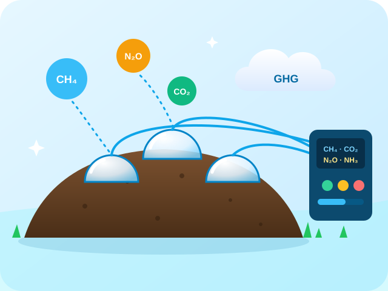
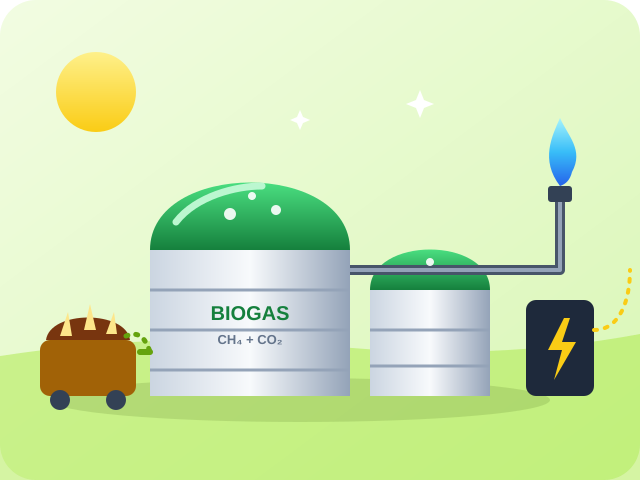
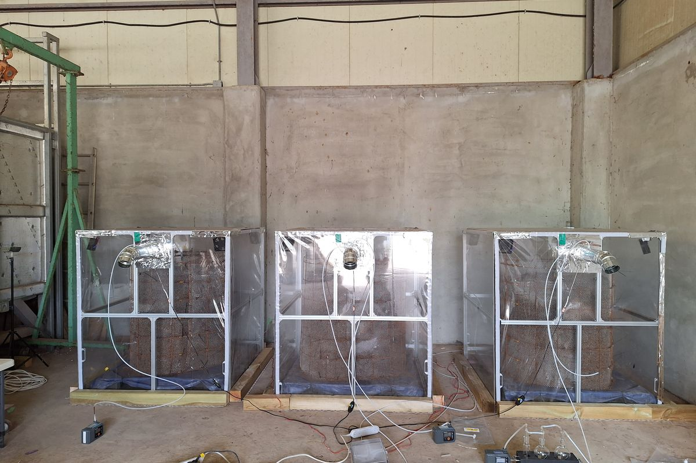
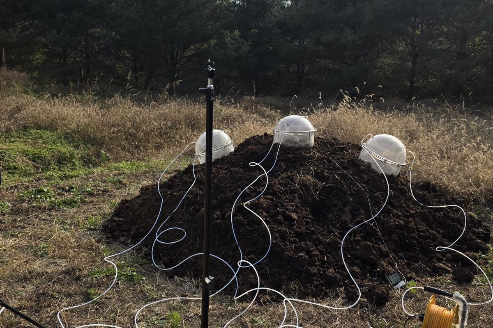
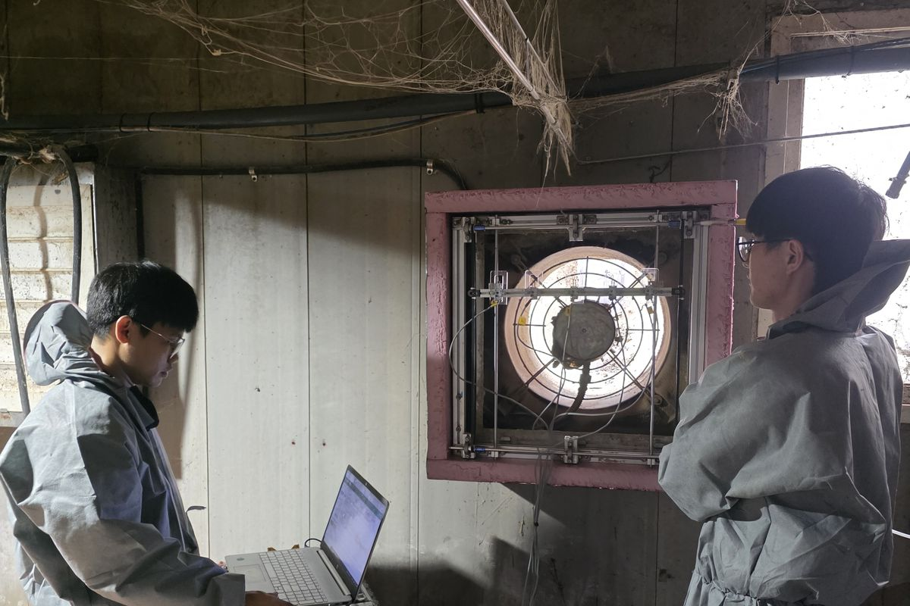
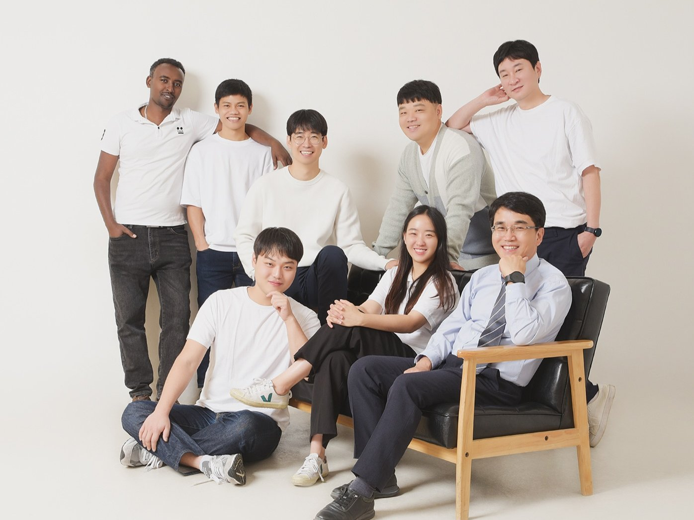

가축과 환경이 함께
지속되는 축산
Livestock farming
that sustains
the environment
충남대학교 축산환경특성화대학원과 동물생산환경연구실(LEL)은 가축분뇨 자원화, 축산악취·온실가스 저감, 바이오에너지 연구로 환경친화적 축산을 위한 과학과 기술을 만듭니다.
The Graduate School of Livestock Environment and the Livestock Environmental Lab at CNU develop the science and technology for environmentally sound livestock production — manure recycling, odour and greenhouse-gas mitigation, and bioenergy.
Counts from this site's records · updated automatically
현장에서 측정하고
데이터로 검증하는
축산환경 연구
Measured in the field,
verified with data
축산과 관련된 환경오염을 줄이고 가축분뇨를 퇴·액비와 바이오에너지 자원으로 활용하는 연구, 그리고 축산에서 발생하는 악취와 온실가스를 평가하고 저감하는 연구를 중점적으로 수행합니다. 실험실에 머무르지 않고 축사와 퇴비장, 농가 현장에서 직접 측정하고 검증합니다.
We reduce livestock-related pollution, turn manure into compost, liquid fertiliser and bioenergy, and assess and mitigate odour and greenhouse-gas emissions from livestock production — measured directly in barns, composting sites and on farms, not only in the laboratory.
지속 가능한 축산을 위한
네 개의 연구 축
Four research streams for
sustainable livestock
가축분뇨, 악취, 온실가스, 에너지. 축산이 환경과 만나는 모든 지점을 연구합니다.
Manure, odour, greenhouse gas and energy — every point where livestock meets the environment.

AREA 01가축분뇨 관리 및 처리기술
Manure management & treatment- 가축분뇨 퇴비화 및 부숙도 관리기술 개발
- 가축분뇨 액비화 기술 개발
- 가축분뇨 바이오차 활용 기술 개발
축산악취 모니터링 및 저감기술
Odour monitoring & mitigation- 축산악취 자동모니터링 시스템 개발
- 악취저감제 효능 평가 및 활용기술 개발
- 축산악취 발생특성 분석 및 저감기술 연구

AREA 03축산분야 온실가스 저감기술
Greenhouse-gas mitigation- 가축의 장내발효 메탄 배출계수 개발 및 산정 고도화
- 퇴비화 과정 중 온실가스 평가 및 저감기술 개발
- 분뇨 저장 과정 온실가스 평가 및 저감기술 개발

AREA 04농축산부산물 바이오에너지
Bioenergy from by-products- 고상 가축분뇨 에너지 전환기술 개발
- 고상혐기소화를 이용한 바이오가스 생산기술
- 농축산부산물 바이오가스 생산 잠재력 평가
현장에서 정책까지,
연구가 이어지는 방식
From the field to policy:
how our research flows
현장 실증
실증 규모 퇴비화 시험구와 축사에서 실제 조건의 실험을 설계하고 운영합니다.
Composting pads · Barns정밀 측정
플럭스 챔버, 가스 분석기, 환기량 측정으로 악취와 온실가스 배출을 정량화합니다.
Flux chambers · Gas analysers분석 · 모델링
배출계수 산정과 통계·기계학습 모델로 배출 특성을 해석하고 예측합니다.
Emission factors · ML models기술 · 정책 적용
특허 기술과 정책 자문으로 연구 성과를 농가와 제도에 연결합니다.
20 patents · Policy advisory108편의 논문으로 쌓아 온
연구 성과
108 papers and counting
2000년부터 발표한 논문을 연도·저자·학술지로 검색하고, DOI와 인용 정보를 바로 확인할 수 있습니다.
Search every paper since 2000 by year, author or journal, with DOI links and one-click citations.
실험실 밖, 현장이
우리의 연구실입니다
Beyond the lab,
the field is our laboratory
실증 규모의 퇴비화 시험구와 플럭스 챔버 시스템을 직접 구축하고 운영하며 실제 조건에서 데이터를 확보합니다.
We build and run pilot-scale composting pads and flux-chamber systems to collect data under real conditions.









함께 연구할
석·박사 과정생을 기다립니다
Join us as a
master's or PhD student
국내외 다양한 배경의 구성원이 축사와 퇴비장, 농가 현장에서 실측 기반의 연구를 이어가고 있습니다. 인턴십, 프로젝트 기반 학습(PBL), 장학 지원 프로그램을 운영합니다.
Members from Korea and abroad carry out measurement-based research in barns, composting sites and farms. Internships, project-based learning and scholarships are available.
찾아오시는 길
Visit us
- Address대전광역시 유성구 대학로 99
충남대학교 농업생명과학대학 2호관 2405호 - Phone042-821-7861
- E-mailgsle@cnu.ac.kr